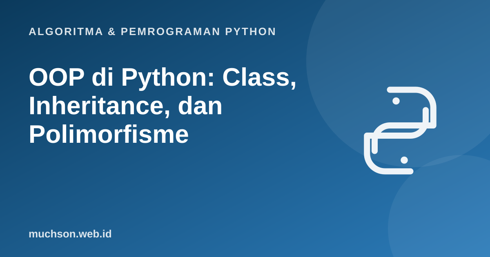

Beranda › Artikel › Algoritma & Pemrograman Python
Algoritma & Pemrograman PythonOOP di Python: Class, Inheritance, dan Polimorfisme
OOP mengorganisasi program sebagai kumpulan objek yang menyimpan data sekaligus perilaku. Python mendukungnya dengan sintaks ringkas. Materi ini menjadi jembatan menuju materi PBO dengan Java: konsepnya sama, hanya sintaksnya yang berbeda.
Sebaiknya sudah paham: fungsi, list dan dictionary

Tujuan belajar
Setelah membaca dan mencoba materi ini, Anda mampu:
- membuat class dengan atribut dan metode
- menerapkan enkapsulasi lewat konvensi dan property
- memakai pewarisan dan super()
- menunjukkan polimorfisme lewat overriding dan duck typing
- memakai metode khusus (__str__, __eq__, __lt__) dan dataclass
Class dan objek
class Mahasiswa:
jumlah = 0 # atribut kelas (milik semua objek)
def __init__(self, nim, nama):
self.nim = nim # atribut objek
self.nama = nama
self._nilai = [] # awalan _ : konvensi "internal"
Mahasiswa.jumlah += 1
def tambah_nilai(self, n):
if not 0 <= n <= 100:
raise ValueError("nilai harus 0..100")
self._nilai.append(n)
def rata_rata(self):
return sum(self._nilai) / len(self._nilai) if self._nilai else 0.0
def __str__(self):
return f"{self.nim} - {self.nama} (rata-rata {self.rata_rata():.1f})"
a = Mahasiswa("A01", "Ani")
b = Mahasiswa("A02", "Budi")
for n in (80, 90, 100): a.tambah_nilai(n)
b.tambah_nilai(70)
print(a); print(b)
print("jumlah objek:", Mahasiswa.jumlah)A01 - Ani (rata-rata 90.0)
A02 - Budi (rata-rata 70.0)
jumlah objek: 2
Enkapsulasi dengan property
class Rekening:
def __init__(self, saldo=0):
self._saldo = saldo
@property
def saldo(self): # dibaca seperti atribut biasa
return self._saldo
def setor(self, jumlah):
if jumlah <= 0:
raise ValueError("jumlah harus positif")
self._saldo += jumlah
def tarik(self, jumlah):
if jumlah > self._saldo:
raise ValueError("saldo tidak cukup")
self._saldo -= jumlah
r = Rekening(100)
r.setor(50)
print(r.saldo)
try:
r.tarik(500)
except ValueError as e:
print("ditolak:", e)
try:
r.saldo = 1_000_000 # property tanpa setter: tidak bisa diubah langsung
except AttributeError as e:
print("AttributeError")150
ditolak: saldo tidak cukup
AttributeError
Pewarisan dan polimorfisme
import math
class Bentuk:
def __init__(self, nama):
self.nama = nama
def luas(self):
raise NotImplementedError("subkelas harus mengimplementasikan luas()")
def __str__(self):
return f"{self.nama}: luas {self.luas():.2f}"
class Lingkaran(Bentuk):
def __init__(self, r):
super().__init__("Lingkaran")
self.r = r
def luas(self):
return math.pi * self.r ** 2
class Persegi(Bentuk):
def __init__(self, s):
super().__init__("Persegi")
self.s = s
def luas(self):
return self.s ** 2
for bentuk in [Lingkaran(1), Persegi(3), Lingkaran(2.5)]:
print(bentuk) # satu kode, perilaku sesuai jenis objek (polimorfisme)
print(sum(b.luas() for b in [Lingkaran(1), Persegi(3)]))Lingkaran: luas 3.14
Persegi: luas 9.00
Lingkaran: luas 19.63
12.141592653589793
Duck typing
Python tidak mewajibkan hubungan pewarisan agar objek dapat dipakai: "jika berjalan seperti bebek dan bersuara seperti bebek, ia bebek". Selama objek memiliki metode yang dibutuhkan, ia dapat dipakai.
class Anjing:
def suara(self): return "guk"
class Robot:
def suara(self): return "bip"
def bunyikan(sesuatu):
print(sesuatu.suara()) # tidak peduli kelasnya, asal punya suara()
for x in (Anjing(), Robot()):
bunyikan(x)guk
bip
Metode khusus dan dataclass
from dataclasses import dataclass
@dataclass(order=True, frozen=True)
class Versi:
mayor: int
minor: int = 0
print(Versi(1, 2) < Versi(1, 10)) # perbandingan otomatis (order=True)
print(Versi(2) == Versi(2, 0)) # kesetaraan otomatis
print(Versi(3, 1)) # repr otomatis
class Vektor:
def __init__(self, x, y): self.x, self.y = x, y
def __add__(self, o): return Vektor(self.x + o.x, self.y + o.y)
def __eq__(self, o): return (self.x, self.y) == (o.x, o.y)
def __repr__(self): return f"Vektor({self.x}, {self.y})"
print(Vektor(1, 2) + Vektor(3, 4))
print(Vektor(1, 1) == Vektor(1, 1))True
True
Versi(mayor=3, minor=1)
Vektor(4, 6)
True
Latihan mandiriCoba kerjakan dulu sebelum membuka jawaban.
1. Tambahkan kelas Segitiga ke hierarki Bentuk.
Subkelas dengan alas dan tinggi, luas() = 0.5 * alas * tinggi, panggil super().__init__("Segitiga").
2. Mengapa Bentuk.luas() melempar NotImplementedError?
Menandakan metode abstrak: subkelas wajib menggantinya. Untuk penegakan ketat gunakan modul abc.
3. Tambahkan __lt__ pada Mahasiswa agar bisa diurutkan menurut rata-rata.
def __lt__(self, o): return self.rata_rata() < o.rata_rata() lalu sorted(daftar).4. Kapan atribut kelas lebih tepat daripada atribut objek?
Untuk nilai yang dipakai bersama semua objek, seperti penghitung jumlah objek atau konstanta.
Ringkasan
- Class mengemas data dan perilaku; objek adalah instansinya.
- Enkapsulasi dengan konvensi _ dan property.
- Pewarisan memodelkan is-a; polimorfisme melalui overriding dan duck typing.
- Metode khusus dan dataclass mengurangi kode berulang.
Tanya jawab
Apakah Python punya private?
Tidak sejati. Awalan _ adalah konvensi; awalan __ melakukan name mangling tetapi tetap bisa diakses bila sengaja.
Apa beda metode, classmethod, dan staticmethod?
Metode biasa menerima self (objek); classmethod menerima cls (kelas); staticmethod tidak menerima keduanya dan hanya berada di namespace kelas.
Apakah Python mendukung multiple inheritance?
Ya, dengan urutan pencarian metode (MRO) yang ditentukan algoritma C3. Gunakan hemat.
Referensi
- Dokumentasi Python: Tutorial, Classes
- Dokumentasi Python: dataclasses
- Dokumentasi Python: Data model (metode khusus)
- Think Python 3e, Allen Downey